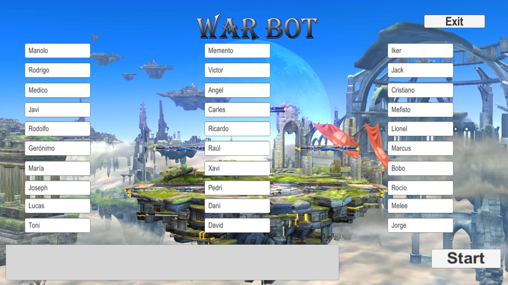

Desde que empecé a aprender a programar, he participado en diferentes proyectos de juegos que han sido subidos a la plataforma Itch.io. Algunos de ellos han sido desarrollados por mí solo y en otros, no obstante, los he desarrollado en equipo.

SurvivalLand
SurvivalLand es un juego de plataformas en 3D en el cual tendrás que correr y esconderte de los enemigos por todos los mapas. Tendrás power ups y plataformas especiales que te podrán ayudar a huir en momentos especiales. Ten cuidado porque hay dos tipos de enemigos, uno de ellos es el Bruto, el típico, pero el otro es el Chivato, el cual huirá de ti para avisar a otros brutos donde estas.
Hicé este juego solo, obteniendo de Internet el contenido 3D, desarrollando el gameplay del juego y desarrollando todos los niveles. Este juego fue desarrollado en Unreal Engine 4 con C++.
Link al video Demo

Whispers
Whispers es una aventura de terror situada en la época de caza de brujas cuando no hace mucho el último miembro de tu familia, tu hermana mayor, fue quemada por brujería. Tú estas seguro de que fue sentenciada injustamente, porque el único brujo de tu familia eres tú. Por esa razón, tendrás que huir del pueblo al bosque más cercano y ahora estás completamente solo, excepto por los susurros: ellos han estado contigo siempre. No les prestabas atención, pero ahora se han hecho más insistentes, llamandote y hablandote. Ellos son tu única esperanza de sobrevivir.
Hice este juego con un equipo de más de 20 personas en el Máster para los Playstation Talents. Este juego fue desarrollado en Unreal Engine 4. El gameplay de este juego está basado en eventos y yo hice la mayor parte de ellos más un manejador de eventos que establece el estado correspondiente para cada evento. Además, fuí el responsable de hacer el movimiento del personaje, los comportamientos de las IAs y la funcionalidad del menú de ajustes.
Link al video Demo
Daedalus Stargazer
Este juego fue realizado en Unreal Engine con C++ para la GlobalGameJam2021. Este juego trata de obtener un número de objetos moviendote a traves de dashes al ritmo de la música.
Participé en esta Game Jam con un equipo y realicé el movimiento del jugador al ritmo de la música y la funcionalidad del juego.
Fujiori
Este juego fue desarrollado en Unreal Engine con C++ para la EpicMegaJam2020. Se trata de descender de una montaña esquivando obstáculos y la dificultad del juego cambia al ritmo de la música.
En esta Game Jam, participé tambien con un equipo y fuí el programador de Gameplay. Realicé el movimiento del personaje de uno de los modos de juego, los mecanismos de victoria y derrota y los efectos de los powerups.

Bets Cards Game
Bets Cards Game es un juego online de cartas con la baraja española en donde tienes que acertar apuestas para ganar la partida.
Realicé este juego solo en Unity y la parte online usé Photon Engine para realizar todo el proceso de conexiones entre clientes y paso de mensajes. Todo el mecanismo del juego lo realiza una misma clase que se llama entre clientes para poder pasar de turno y actualizar valores.

Trading Paradise
Trading Paradise en un juego de puzzle en donde tienes que tradear objetos para alcanzar uno objetivo. Este juego fue desarrollado en Unity con C# y tiene dos modos de juego, de un solo jugador y de dos jugadores.
Realicé este juego solo, incluyendo la parte de arte, el diseño del juego y la programación del mismo. La lógica del juego siempre proporciona una manera, al menos, de alcanzar el objetivo y, dependiendo de la dificultad, el número de tradeos que tienes que realizar cambiará.

Sweet Alliance
Este juego fue creado para la Global StartupCities GameJam en Unity con C#. Sweet Alliance es un juego multijugador cooperativo local donde tienes que proteger tu base de los enemigos. Sin embargo, no será fácil porque cada jugador controla el movimiento de su personaje y el disparo del otro.
Realicé este juego con un equipo y fuí el responsable de realizar el spawn de los enemigos, la condición de derrota y los efectos de los powerups.

Switch On
Este juego fue desarrollado para la Futuristic Jam 2020 en Unity con C#. Switch On es un juego donde tendrás que recuperar tu vista y salir del lugar sin ser visto por los enemigos.
Esta fue mi primera Game Jam y la hice con un equipo. Fuí el responsable del comportamiento de los enemigos, la carga de niveles y el mecanismo de las puertas.

War bot
War bot es un juego que crea una guerra entre jugadores (máximo 30 nombres) y este juego fue diseñado para recrear los famosos bots de Twitter que fueron creados en 2018, los cuales hacian esto mismo.
Realicé este juego solo en Unity con C# y fue creado para PC y móviles Android y tiene una interesante lógica de juego. Si un jugador derrota a muchos jugadores, este tendrá más posibilidades de ganar en el siguiente combate, pero no será invencible.
The hunting of the bones
Este fue mi primer juego y lo realicé para una asignatura de mi grado de Ingeniería Informática en Unity con C#. Realicé todo el juego solo, incluyendo los modelos 3D y las animaciones. En este juego, tu objetivo es obtener todos los huesos por toda la casa sin ser vistos por los gatos. El comportamiento de los gatos (los enemigos) son simples y algunos objetos del mapa cambian dependiendo del número de huesos que tengas.